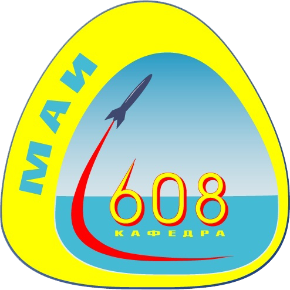

В 1975 году на кафедре 608 "Двухсредные летательные аппараты" было образовано новое подразделение - студенческое конструкторское бюро, которое в дальнейшем получило название "Океан". Среди консультантов и научных руководителей СКБ были доктора наук, профессора, кандидаты технических наук, аспиранты.

В первые же годы своего существования под руководством Махрова В.П., Рудовского О.Б., Непокойчицкого В.Н. силами студентов СКБ были созданы и внедрены в промышленность многие проекты. Сегодняшние молодые сотрудники СКБ являются достойными продолжателями творческих традиций и могут гордится не менее значимыми достижениями, чем были сделаны их предшественниками.
За последние 5 лет студенты приняли участие с новыми техническими разработками более чем в 20 выставках, из которых 7 имеют Международный статус, 5 - Всероссийский, среди них такие как "Международный Салон изобретений и интеллектуальной собственности "Архимед", "Научно-Техническое Творчество Молодежи "НТТМ".